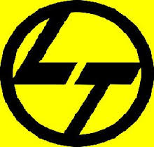
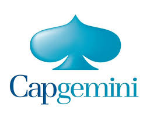
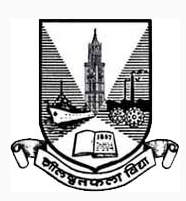

Tanvi Parikh
Boulder, CO
United States
tanvi.parikh@colorado.edu
+1(720)-545-7950
United States
tanvi.parikh@colorado.edu
+1(720)-545-7950
Hobby
| Name | Experience |
|---|---|
| Graphic Designing | 4 years |
| Cooking | 3 years |
| Swimming | 4 years |
Work Experiences
| Org | Position | Duration | Description |
|---|---|---|---|
|  | Software Development Intern | June-July 2012 | -Tested Intranet Website and eliminated 20 percent of design errors -Programmed in ASP.net to reduce design time for one part from 3 hours to 30 minutes -•Gained exposure to dealing with deadlines, reports, meetings and demonstration to the technical panel. |
|  | Software Engineer | November 2013-July 2014 | Worked for General Electric using Enovia (Dassault Systems) in Product Lifecycle Management using Iterative SDLC and significantly reduced design time -Trained two junior consultants to test & develop software and reduced rework and design problems on prototype. -Worked for General Electric as Advanced Java Developer for tweaking Aviation System Software and decreased product development costs 25-30 % on average. -Worked for Vistaar as a Data Analyst by doing multi-dimensional data modelling using IBM Cognos TM1 Software and shortened client decision-making process |
Education
| College | Degree | GPA | Duration |
|---|---|---|---|
| Mumbai University | Computer Engineering | 3.89/4.00 | August 2009 to May 2013 |
| University of Colorado Boulder | Masters in Computer Science | 3.6/4.00 | Fall 2014 to Summer 2016 |
Portfolio
| Project Title | Link | Year | Coding Language |
|---|---|---|---|
| Banking Project | https://abcc.com/baanking/tanvi91.code | 2011 | C++ |
| Twiner - Tweet Miner | https://coolio.com/batwiner/tanvi91.code | 2014 | Apache Storm |
| Alumni Database System | https://whatsup.com/alumnus/tanvi91.code | 2015 | SQL Server |
Skills
| Skill | Expertise | Experience |
|---|---|---|
| Conflict Resolution | Rookie level | 4 years |
| Public Speaking | Expert level | 6 years |
| Leadership | Proficient level | 2 years |
| Creative Writing | Advanced level | 5 years |
| Thinking logically | Intermmediate level | 8 years |
| Baking | Newbie level | 2 years |
Honors
Mumbai University

Academic Excellence (top 2% of class)
CU-Boulder Computer Science Fellowship
Merit-based Scholarship
References
| Reference Name | Contact Number | Contact Email | Designation |
|---|---|---|---|
| Mr. Ajay P | +91 9833558105 | ajay.p@lnt.cc.in | Larsen & Toubro Infotech-Tech Lead |
| Mr. Anupam Dey | +91 9856895689 | anu.dey@capgmemini.com | Capgemini GE Lead |
| Mr. Sagar Vora | +91 9855225589 | sagarvora@gmail.com | Cepgemini Source Operator |
| Prof. Shiv Mishra | +1(720)-898-7532 | smishra@hotmail.in | University of Colorado Boulder Professor |